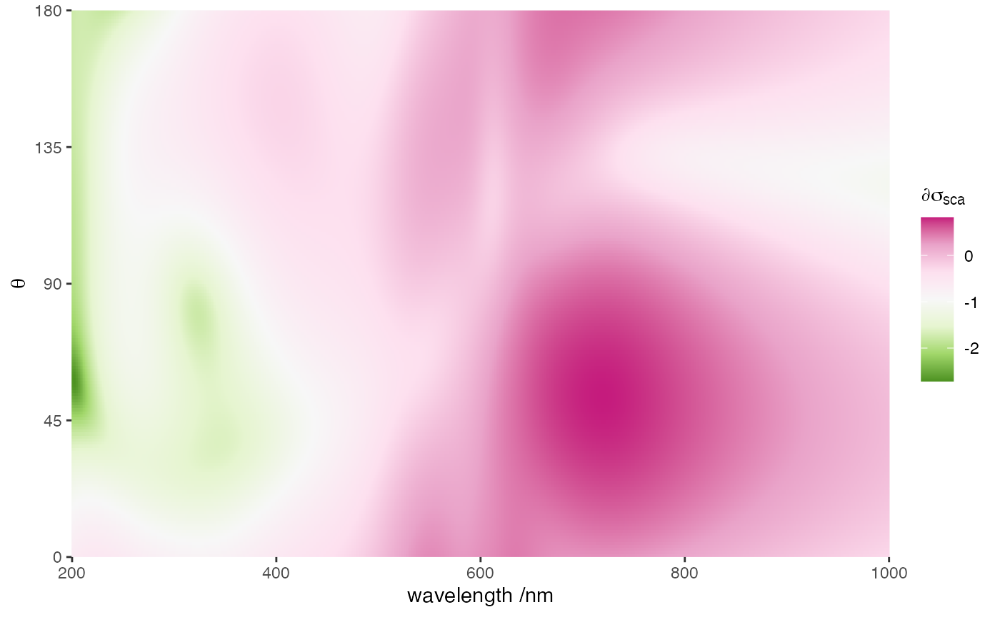
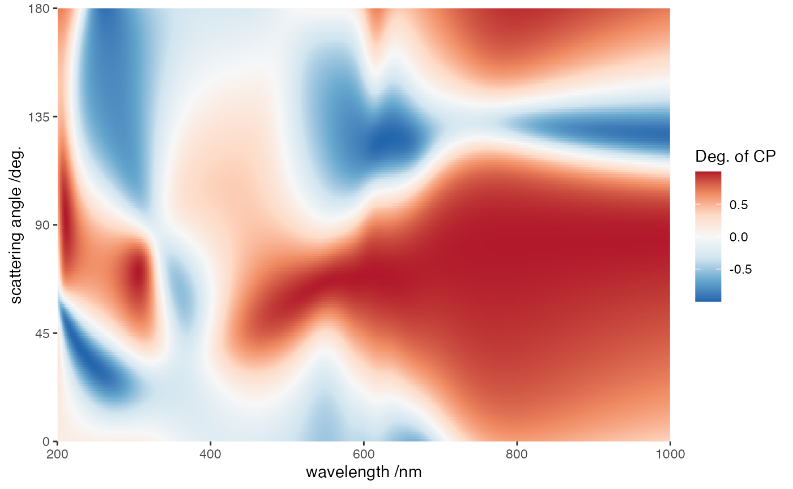

vignettes/08_polarimetry/08_polarimetry.Rmd
08_polarimetry.RmdThis example illustrates the degree of circular polarisation at different wavelengths and scattering angles (\(\theta\)). The structure consists of a helix of five prolate gold spheroids inside the water with semi-axes a = b = 30 nm and c = 50 nm. The helix axis is z, radius 100 nm, pitch 700 nm, and the angular-step \(\delta = \pi / 4\). The following R utility function was used to model the geometry,
terms::cluster_helix(N = 5, a = 30, b = 30, c = 50, R0 = 100, pitch = 700, delta = pi/4)The structure is illuminated with a linear polarised plane wave along the x direction, and the wavevector along the z direction.
This simulation uses the following input file
ModeAndScheme 3 3
MultipoleCutoff 8
Wavelength 200 1000 800
Medium 1.7689
Incidence 0 0 0 1
ScatteringAngles 0 -180 0 1 0 0 0
OutputFormat HDF5 farfield
TmatrixFiles 1
"tmat_Au60100_step1.tmat"
Scatterers 5
TF1 100 0 -175 50.0 1.57 0.73 0 1.67
TF1 70.71 70.71 -87.5 50.0 2.36 0.73 0 1.67
TF1 0.0 100.0 0.0 50.0 3.14 0.73 0 1.67
TF1 -70.71 70.71 87.5 50.0 -2.36 0.73 0 1.67
TF1 -100 0.0 175 50.0 -1.57 0.73 0 1.67Mode 3 triggers the calculation of polarimetric quantities, with output listed below.
group name otype dclass dim
0 / Polarimetry H5I_GROUP
1 /Polarimetry Incidences H5I_DATASET FLOAT 1 x 4
2 /Polarimetry Sca_angles H5I_DATASET FLOAT 180 x 3
3 /Polarimetry Stokes_Sca_Vec H5I_DATASET FLOAT 144180 x 8
4 /Polarimetry Stokes_phase_Mat H5I_DATASET FLOAT 144180 x 20
5 /Polarimetry Wavelengths H5I_DATASET FLOAT 801
6 /Polarimetry diff_Sca_CS H5I_DATASET FLOAT 144180 x 5The output field diff_Sca_CS contains the differential scattering cross-section for the scattering angles requested, while fields Stokes_phase_Mat and Stokes_Sca_Vec include data of Stokes phase matrix and Stokes scattering vector. The structure is chiral and therefore converts linear polarisation to partially-circular polarisation, which can be quantified in the ratio between \(V\) and \(I\) (\(V/I\)) or, for an \(x\)-polarised plane wave, as \((Z_{41}+Z_{42})/(Z_{11}+Z_{12})\).
The data have the following format
alpha beta gamma wavelength diff_Sca_CS
1 0 0.008726646 0 200 0.2267166
2 0 0.008726646 0 201 0.2313050
3 0 0.008726646 0 202 0.2357145
4 0 0.008726646 0 203 0.2399384
5 0 0.008726646 0 204 0.2439711
6 0 0.008726646 0 205 0.2478077
The data have the following format
alpha beta gamma wavelength z11 z21 z31 z41
1 0 0.008726646 0 200 69.27876 59.16038 -3.080489 11.72434
2 0 0.008726646 0 201 70.62095 60.42160 -3.201968 11.85424
3 0 0.008726646 0 202 71.92773 61.61690 -3.329345 11.97899
4 0 0.008726646 0 203 73.19791 62.74377 -3.462689 12.09859
5 0 0.008726646 0 204 74.43058 63.79985 -3.601994 12.21302
6 0 0.008726646 0 205 75.62516 64.78294 -3.747174 12.32232
z12 z22 z32 z42 z13 z23 z33 z43
1 59.15887 67.85430 -1.693899 6.733812 3.163386 1.743800 29.17681 17.55924
2 60.41607 69.18253 -1.891408 6.787874 3.272695 1.940212 29.69735 17.62915
3 61.60728 70.47543 -2.106970 6.826921 3.387588 2.154458 30.27917 17.67430
4 62.73001 71.73162 -2.341067 6.850974 3.508169 2.387038 30.92326 17.69600
5 63.78191 72.94998 -2.594150 6.860122 3.634467 2.638426 31.63027 17.69556
6 64.76080 74.12971 -2.866638 6.854519 3.766429 2.909065 32.40052 17.67439
z14 z24 z34 z44
1 11.70986 6.734316 -17.54938 30.60124
2 11.86309 6.823201 -17.62146 31.13574
3 12.01207 6.898508 -17.66896 31.73143
4 12.15669 6.960233 -17.69318 32.38949
5 12.29681 7.008439 -17.69547 33.11076
6 12.43233 7.043251 -17.67723 33.89580The data have the following format
alpha beta gamma wavelength I Q U
1 0 0.008726646 0 200 0.0004001976 0.0003957638 -1.487647e-05
2 0 0.008726646 0 201 0.0004082970 0.0004038323 -1.587040e-05
3 0 0.008726646 0 202 0.0004160805 0.0004115852 -1.693896e-05
4 0 0.008726646 0 203 0.0004235365 0.0004190105 -1.808387e-05
5 0 0.008726646 0 204 0.0004306549 0.0004260975 -1.930651e-05
6 0 0.008726646 0 205 0.0004374272 0.0004328366 -2.060791e-05
V
1 5.751357e-05
2 5.808677e-05
3 5.859716e-05
4 5.904475e-05
5 5.942983e-05
6 5.975292e-05
Last run: 10 February, 2022